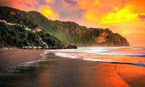
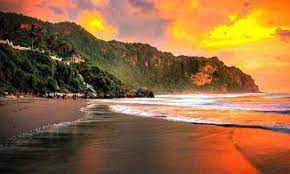

Pantai Parangtritis di Jogja adalah salah satu pantai terkenal yang menawarkan kombinasi indah antara pasir putih yang luas, ombak yang kuat, dan pesona alam yang memukau. Terletak sekitar 27 kilometer dari pusat kota Yogyakarta, pantai ini menjadi tujuan wisata populer bagi wisatawan lokal maupun mancanegara.


 


Parkiran Sangat Sangat Luas untuk Bus, Mobil sama motor. Sedia aneka tempat makan, oleh" khas Yogya, cendra mata khas Yogya, aneka fashion khas Yogya juga. Sedia Kolam Air Panas Berbayar, Delman, Motor ATV, Mobil Jeep, Sewa Payu Pinggir Pantai, Panti yang sangat luas, ombak cukup besar terakhir ke sana, sedia toilet, kamar ganti berbayar & tempat sholat. Mau liburan kepantai kesini aja untuk bermain motor ATV dan Mobil Jeep Sewanya Harga Cukup Mahal.
Pas kesini pas weekend.. jd super rame pol.. males antri kamar mandi jd memutuskan utk naik jeep aja.. puas bgt naik jeep. biaya 450 durasi 2jam + drivernya sangat2 ramah ⭐⭐⭐⭐⭐ lokasi track sgt lengkap. finish di pantai yg ada penangkaran penyunya..✨✨
Tempat pelarian terbaik ketika suntuk dengan kota jogja. Berangkat setelah ashar menuju pantai parangtritis paling timur dan berjalan menuju tebing. bagi yang membawa anak kecil bisa menaiki andong, dan bagi yang ingin lebih menantang menyewa jeep dan atv. saya prefer jalan kaki menikmati sunset. Sangat disayangkan banyak sampah bertebaran terutama sampah plastik, sampah batok kelapa, serta kayu. Walaupun banyak sampah, sunsetnya tetap selalu cantikk dan menarik. Selalu membawa jajan dan minum dan membawa pulang sampah untuk dibuang di tempat sampah.